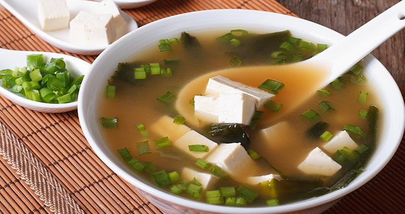
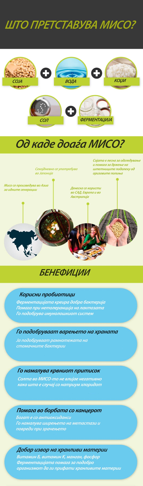

Многумина од вас сигурно се прашуваат што е МИСО супа. Тоа е солена паста направена од ферментирани зрна најчесто соја, кој е главен елемент во јапонската исхрана за илјадници години. Исто така може да се направи со користење на одредени житарици како ориз или овес, се меша со сол и бактеријата Коџи. Овој рецепт е доста познат на Западот и се користи за следниве намени:
1.Олеснување на замор
2.Спречување од воспаленија
3.Го намалува ризикот за ширење на канцерот

Потребни состојки:
-12 чаши вода
-1/2 лажици Вакаме или други алги
-1 чаша моркови сецкани
-50гр. шитаке печурки
-50гр. соја зрна замрзнати
-150гр.тестенини од елда,неварени
-250гр. сецкана зелка
-6 лажици МИСО паста, бела
-1 лажичка Васаби зачин
-1 лажица ѓумбир мелен
-1 лажица масло од сусам
-4 сомелени лукчиња
Загрејте го сусамовото масло во голема тава. Потоа додадете ги ѓумбирот и лукчињата и гответе ги околу една минута. Додадете ги Вакаме Алгите, морковите, печурките и гответе ги додека да зоврие. Покријте ја тавата и гответе ги околу 15 минути додека да омекнат сувите печурки. Додадете ги соја зрната и гответе уште 5 минути. Потоа додадете ја зелката и тестенините. Гответе уште 7 минути додека да се зготват тестенините. Ставете ги Мисо пастата и Васаби зачинот во еден сад и додадете половина чаша од супата. Мешајте додека да добиете рамномерна смеса односно додека ги снема грутчињата. Потоа додадете ја оваа смеса во тавата со супата. Добро промешајте. Супата служете ја топла.
